30天鐵人賽介紹 AWS 雲端世界 - 24: 簡單上手的帳號整合管理服務 Cognito
What is Cognito
AWS Cognito 可以快速輕鬆地將使用者註冊/登入和存取控制新增到應用程式( Web 或 Mobile App 皆可)，支援普遍的社交帳號作為使用帳戶註冊(如Facebook、Google 和Amazon) 以及透過SAML 2.0 以企業身分供應商進行登入。
因為這個服務在現在的應用程式實在太普遍，所以給大家看一張圖應該就知道這要幹嘛用的:
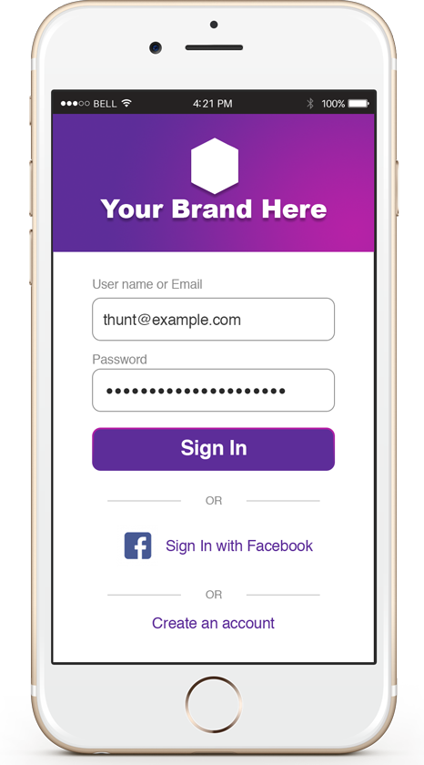
所以透過 AWS Cognito 我們就可以快速的實作登入服務並取得授權的資料摟，接下來我們就來實做一下吧。
Hands on Lab
首先先登入 [AWS Console] 後在中間的輸入框查詢 Cognito ，或是透過左上角的 Services 點選到 Security, Identity & Compliance 下的 Amazon Cognito 服務：
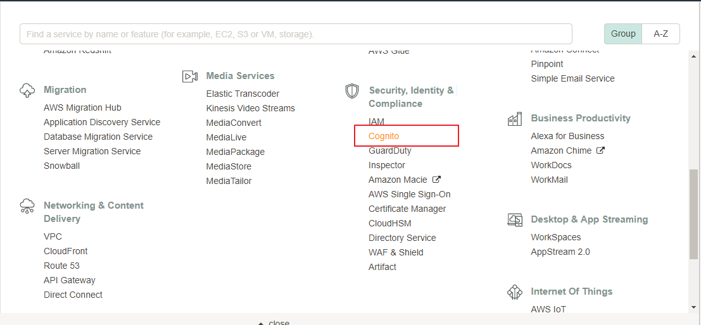
接著我們就快速建立分散式登入:
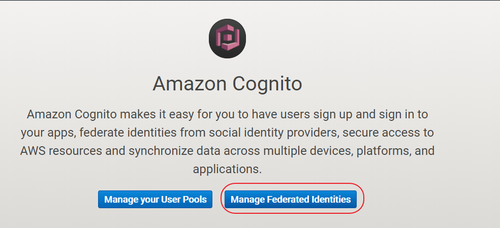
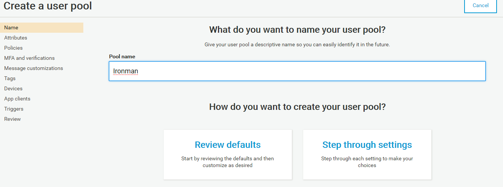
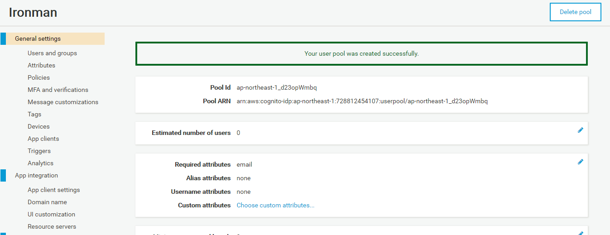
上述步驟會需要填入要整合的 APP ID，這邊以Facebook為例示範如何申請。
首先先至 Facebook Developer Portal 申請開發帳號後就建立一個新的 APP :
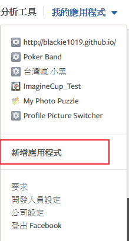
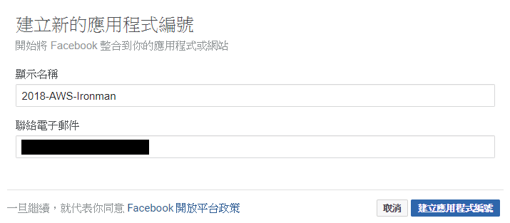
選擇 Facebook 登入類型:
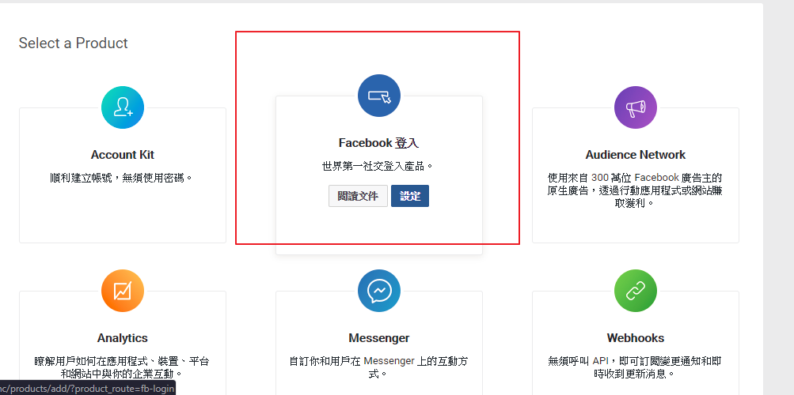
這邊填入網址:
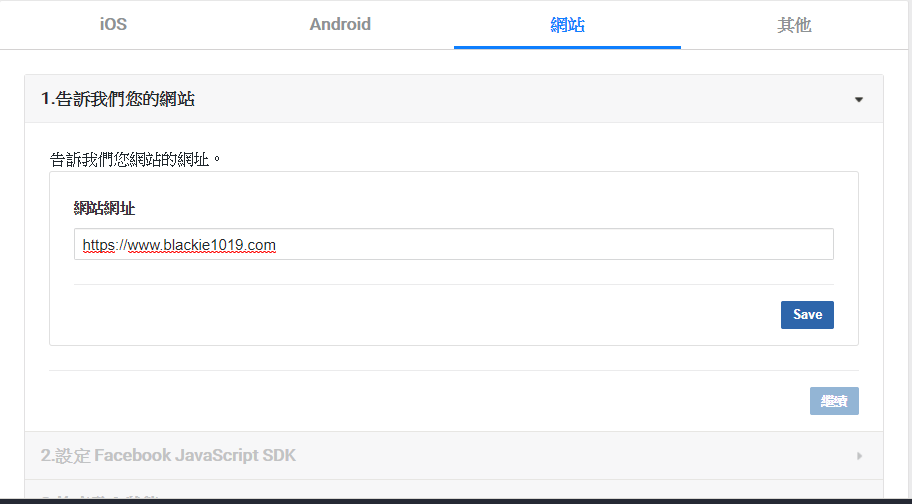
我們即可將申請好的 Facebok APP ID 填入 Cognito 服務中:
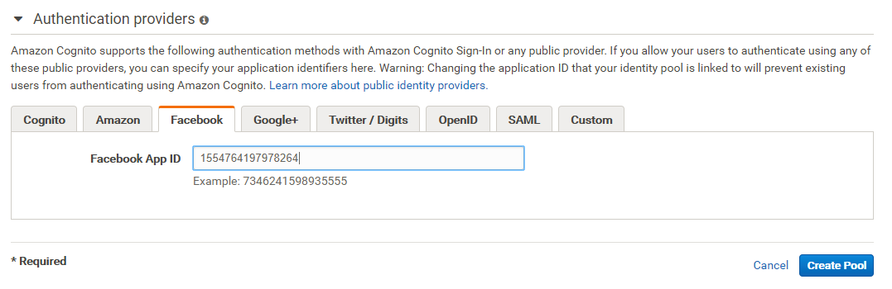
完成申請後官方會有提式教你該如何使用 Cognito 的 SDK 與 API回應，這邊請直接參考小範例的程式碼:
1 |
|
由於先前註冊的 Facebook APP ID 網域內容是放置 S3 上，所以我們只要將剛剛編輯的網頁丟至 S3 即可看到該頁面:
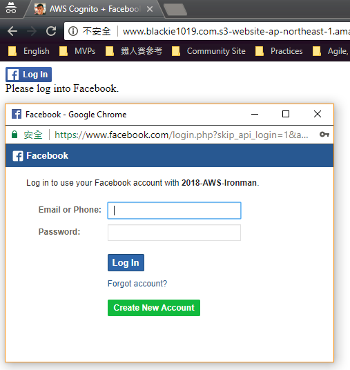
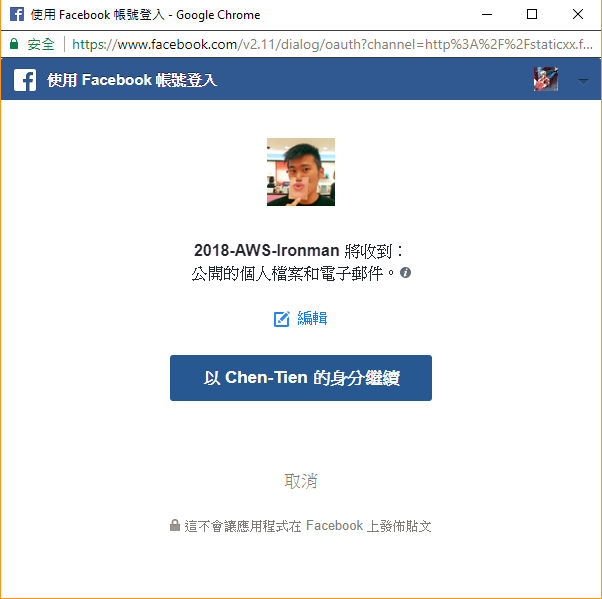
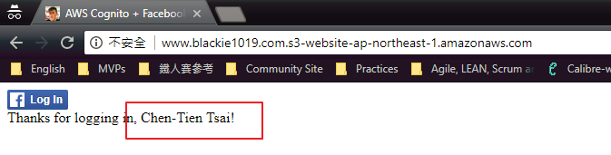
最後當有人從頁面登入後就可以去 Cognito 這邊看紀錄:
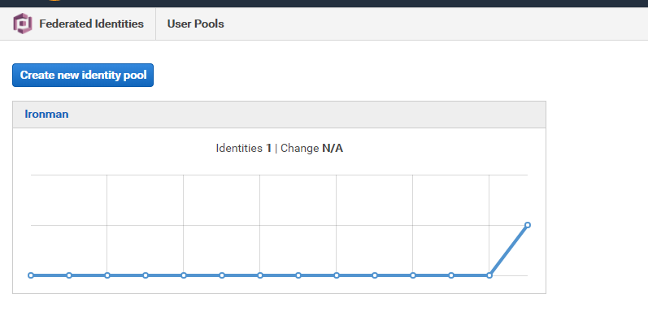
如此一來我們就可以 Cognito 整合不同的平台帳號達到多重登入的效果。
程式碼範例:AWS Cognito sample code